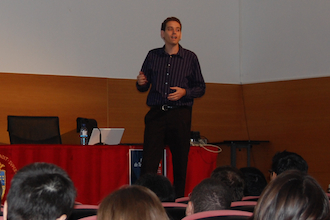

Una mañana con Java
III Jornada de Tecnologías Java
Bienvenidos a la III Jornada de Tecnologías Java, organizada por el Título de Especialista Universitario en Java Enterprise, el Vicerrectorado de Extensión Universitaria y la Escuela Politécnica Superior de la Universidad de Alicante. La jornada se celebrará el martes día 1 de Diciembre en el Salón de Actos de la Escuela Politécnica Superior (edificio 16 en el plano de la UA). La inscripción es gratuita y está abierta a todos aquellos que tengan curiosidad en conocer en más profundidad las tecnologías Java y el desarrollo Open Source.
Este evento forma parte de los actos programados durante este curso académico para la celebración del 25 aniversario de las titulaciones de Informática en la Escuela Politécnica Superior y se enmarca en el convenio de colaboración Sun-Universidad de Alicante.
Actualizaremos la información en el twitter del Especialista Java Enterprise con la etiqueta #javaua09. Para cualquier consulta, contactar con Domingo Gallardo, coordinador del evento.
Estáis invitados a pasar una mañana con Java.
Conferenciantes
Contaremos con conferenciantes excepcionales, con gran experiencia en la utilización de tecnologías Java y en la puesta en marcha y dirección de importantes proyectos empresariales y de desarrollo de software.
Emilio Bravo. Socio fundador de Ingeniería Informática Empresarial (i2e). Co-autor, junto a José Luis Ramírez, del paquete de software ERP ERP-I2E. Experto en tecnologías Java EE, MDA y desarrollo Scrum. Puedes seguirlo en el twitter de i2e.
Conferencia: El framework Google Web Toolkit
Sergio Montoro. Socio fundador de KnowGate. Fundador y líder del proyecto Open Source Hipergate, una plataforma Java para soporte empresarial de Intranets, gestión de relaciones con clientes (CRM), e-Marketing y groupWare, entre otras funcionalidades. Escribe en los blogs La pastilla roja y Versión cero. Puedes saber más sobre él en su página personal.
Conferencia: Modelos de negocio alrededor del software libre
Martín Pérez. Recientemente metido a emprendedor, como socio fundador de Jobsket, un portal para la búsqueda de empleo. Durante diez años ha participado y dirigido el desarrollo de importantes proyectos internacionales Java EE en el sector financiero y sanitario tanto en España como en Irlanda. Fundador y líder del proyecto Open Source jLibrary. Participó activamente durante varios años en JavaHispano, dinamizando con gran éxito la comunidad. Escribe el blog Pensamientos ágiles.
Conferencia: Desarrollo y pruebas de proyectos Java en un entorno ágil
Francisco Peyrona. Sun Microsystems Ambassador. NetBeans Evangelist. Miembro del grupo de coordinación de Sun con Universidades. Ingeniero Senior Java en Sun, trabaja principalmente en el área de SQA y en los sectores de Banca y Administraciones Públicas. Ha dirigido el desarrollo de proyectos Java durante diez años, entre ellos el proyecto Open Source JDBC Manager que se ha integrado en el entorno de desarrollo NetBeans. Awarded Sun Engineer. Gran divulgador Java, es conocido por sus numerosas charlas, libros y artículos.
Conferencia: Desarrollo Java Destilado
Programa
| 9:00-9:30. | Entrega de documentación |
| 9:30-9:45. | Inauguración: Director de la EPS D. Fernando Llopis (Vídeo) |
| 9:45-10:40. | Conferencia: El framework Google Web Toolkit. Emilio Bravo. Vídeo, PDF |
| 10:40-11:30. | Conferencia: Desarrollo y pruebas de proyectos Java en un entorno ágil. Martín Pérez. Vídeo, PDF |
| 11:30-12:00. | Pausa café |
| 12:00-13:00. | Conferencia: Modelos de negocio alrededor del software libre. Sergio Montoro. Vídeo, PDF |
| 13:00-14:00 | Conferencia: Desarrollo Java Destilado. Francisco Peyrona. Vídeo, PDF |
| 14:00. | Sorteo iPod nano entre los asistentes |
Colaboran y organizan
 |
|||
Noticias y referencias
- Noticia en Universia (1/12/09)
- Observatorio CENATIC (30/11/09)
- Nota de prensa de la Universidad de Alicante (30/11/09)
- Blog de i2e (25/11/09)
- Blog de Fran García (18/11/09)
- Blog de Martín Pérez (17/11/09)
- Noticia en JavaHispano (17/11/09)
- Noticia en la web de la UA (11/11/09)
- Noticia en la EPS (5/11/09)
Cartel
Fotos
